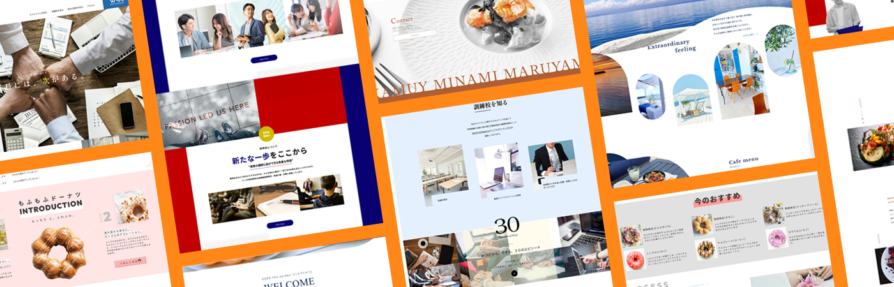
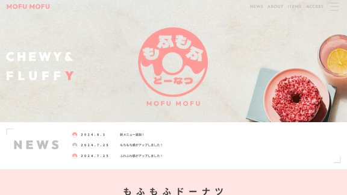
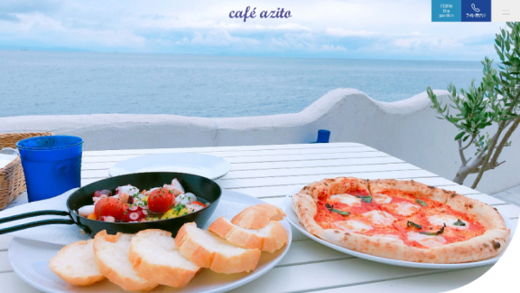
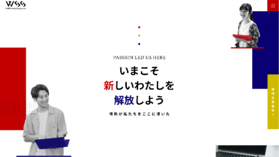
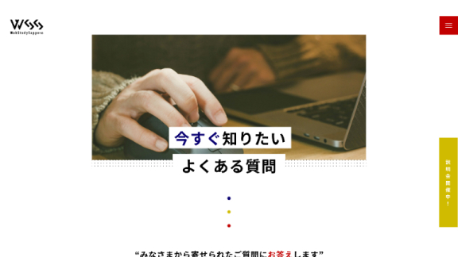
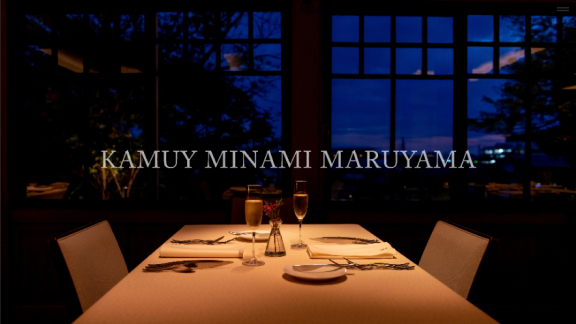
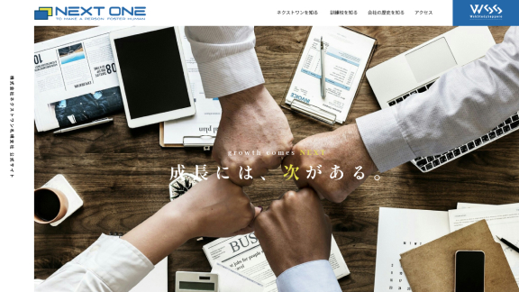

サイト・カンプ紹介
伝わりやすさ、見やすさを第一に、見る人にとって…を考えます

サイト紹介

もふもふドーナツ
架空のドーナツ屋のサイトです。たくさんの個性的なドーナツを引き立てるため淡くかわいらしく仕上げました。
詳細を見る

カフェ アジト
ロケーションレンタルもできるおしゃれなカフェのサイトです。曲線を多く使い波をイメージしています。

wssリニューアルサイト
学校感と会社感どちらも出せるようカラー、デザインを考えました。
[MY WORK]
カンプ紹介

wssリニューアルサイト下層ページ
トップページの特徴を残しつつデザインするのが難しかったです。下層なので少しシンプルに作成しました。
PDFを見る

レストラン カムイ
高級感のあるレストランのため、デザインも高級感を出すように気を付けました。

NEXT ONE コーポレートサイト
シンプルにわかりやすく、硬くなりすぎないようにしました。雰囲気を伝えたかったので写真を多めに使っています。